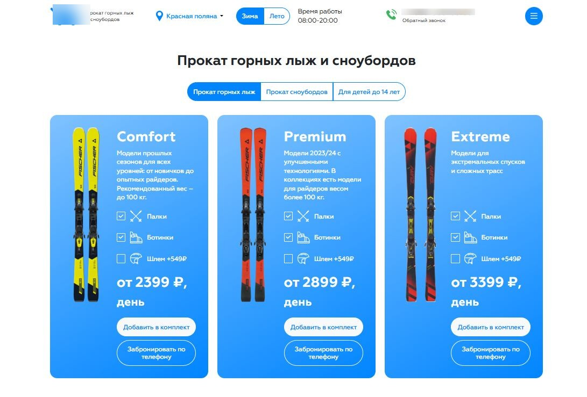

Проект - сеть пунктов проката лыж, сноубордов и экипировки на горнолыжных курортах по всей стране. У каждого гео и курорта своя страница на поддомене. Бизнес сезонный: спрос на предбронирование появляется осенью, активный горячий спрос достигает пика в январе и весной постепенно сходит на нет по мере потепления.
До меня рекламу вел другой подрядчик, и результатом клиент остался недоволен. Я пришел в начале сезона 2025/26 с задачей перезапустить Директ и собирать брони по всем активным курортам. Главный приоритет проекта: Красная Поляна и Роза Хутор.
